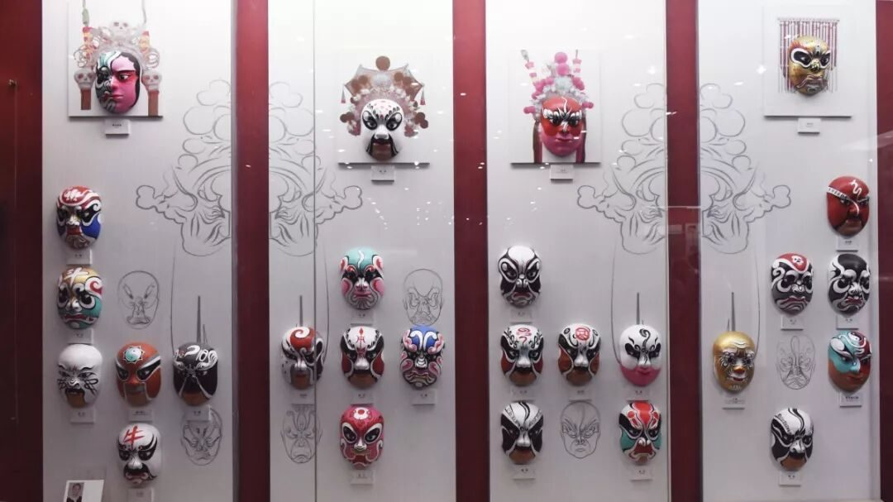
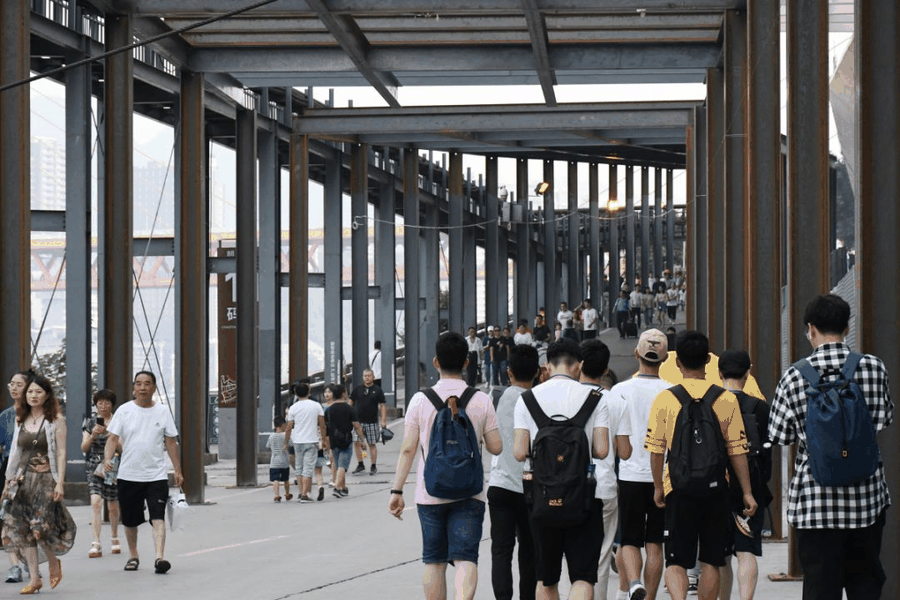

【渝传尺素•十九】吾将上下而求索
行者
杨博渊
山河辽阔，行者无疆

已经结束了22天的行者无疆实践，犹如近在眼前的昨天。一碗清晨的重庆小面开启每天的行程，一份夜晚的水果冰粉结束一天的劳累困顿，在这样一个美食环绕的网红城市中，我们找寻着繁华下的古老巴渝。

如果说上一期的西安之行于我而言有些仓促，仓促的来，仓促的去，那么这一期的渝州之行对我来说是一场完美的邂逅，从踏上去重庆的火车开始，告别了高楼林立的北京，经过一夜的咣当，再看向窗外时，已是雾气缭绕的群山，走下火车，忍不住说一句：勒是雾都。不同于其他南方城市的炎热，在雾气翻涌的重庆，感觉到的是丝丝清凉。

印象里的重庆，只有火锅、川剧和这里的长江三峡，短暂的六天行程里，重庆于我，有了翻天覆地的变化。它不再是一个肤浅的网红打卡的地方，这里还有丰富的巴渝文化，有坚贞的红岩精神，有爱国的卢作孚，有悠久的北碚历史，深藏在这座城市中血液中的不屈不挠的精神。
越是深入感知这座城市，越是感到惋惜。给予我感触最深的，是陈列在川剧博物馆中的脸谱，由于脸谱作者的去世，剩下的三张脸谱至今只有三个空白，没有被后人画好展览。不能否认文化是随着时代的发展而变化的，但是这样一种堪称国粹的文化却在新型潮流文化的冲击下如此惨淡的收场，是受众人群的减少还是浮躁的文化容忍不了这样的文化，是现在几乎所有古代文化的尴尬之处。


同样给予我很大感触的，是高尚忠贞的红岩精神，抗战中的重庆有着另一种颜色，它是白公馆渣滓洞中忠烈的红，是白色恐怖下工农学生的呐喊。这里有妻子送郎上战场，母亲送儿打东洋的感人画面，也有冒着日军飞机狂轰滥炸下努力生产的大后方，还有捐钱捐物建造收留失去父母、流落异乡孩子的妇女。正是重庆人民在抗战中将民族利益视为高于一切，勇于奉献，用他们自己的血肉之躯和不朽精神为中国的抗日战争筑起了一道坚不可摧的铁血长城，阻挡了日本妄图灭亡中国的步伐，并赢得了抗战的最终胜利。
每天结束形成后的行者会议，大家交流着一天的心得，从发放问卷被拒的心酸，到看到北碚文化的喜悦，从劳累的上下楼梯，到美丽壮阔的长江，我们去过的每一分土地上都充斥着思想的碰撞。从三峡文化、移民文化、抗战文化、统战文化中，我们勾勒出了自己心中的那个重庆，一个光鲜亮丽外表下同样丰富悠久的重庆。




足迹
总会在消失的足音中
渐行渐远，
行者
永远在前行的路上
上下求索。
来源丨行者无疆实践团
文字丨杨博渊
排版丨陈嘉颖
审核丨邓子孚 段智然
视频丨陈辉
行者无疆实践团
QQ：2758025831

随行者一起认识世界
长按二维码